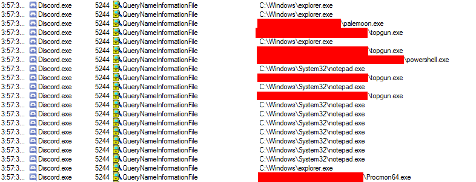
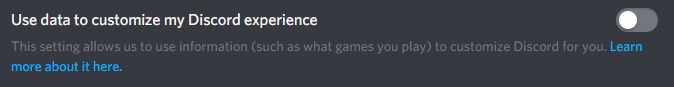
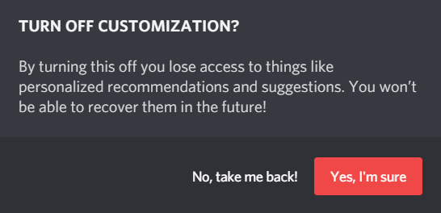
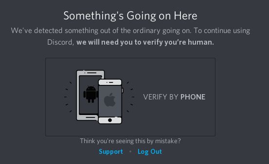

Discord is an instant messaging application for MacOS, Windows, Linux, Android, and iOS. Discord is used to communicate via voice chat and text chat, and has image-sharing and file-sharing capabilities.
Thanks to Richard Stallman for linking to our article here! The spotlight is very much appreciated.
Discord is spyware because it collects all information that passes through its communication platform. As Discord is a centralized communication platform, all communications have to go through Discord's official servers, where all of that information can potentially be recorded. The vast majority of said information has been confirmed to be recorded, such as all communications between users. Discord has also been confirmed to use other spyware features such as various forms of telemetry. Discord's main source of income is from investment, from which it has received over $279.3 million dollars[4]. Discord cannot be built from source and the source code for Discord is unavailable.
It is impossible to download and examine Discord's source code, which means that it is impossible to prove that Discord is not spyware. Any program which does not make its source code available is potential spyware.
Discord explicitly confirms in its privacy policy[1] that it collects the following information:
Discord does not explictly confirm that it collects this information, but still collects it by default:
The implications of this information can be broken down like this: By recording your IP address, Discord can track your general location (about as precise as which county you are in). Discord can also tell which devices you use, as it uniquely identifies each device, and how much you use those devices, as it can record your device usage habits (since Discord is usually open in the background so that it can receive messages). Discord also records every single interaction you have with other users through its service. This means that Discord is confirmed to log every conversation that you have through Discord, and record everything that you say on Discord, and view all images that you send through Discord. Therefore, none of your interactions on Discord are private. Discord's privacy policy also contains several occurrences of phrases such as "including but not limited to," which is an explicit confirmation that Discord contains more spyware features that are not disclosed to the user.
Discord contains the opt-in spyware feature known as "social media integration." This allows you to sync your persistent user identity on Discord with your persistent user identity on other spyware platforms, such as Facebook and Twitter. In its privacy policy[1], Discord has confirmed that if you opt in to this spyware feature, Discord will obtain an undisclosed amount of access to information obtained about you by the spyware platforms that you choose to sync with.
Discord has been confirmed to monitor the open processes on your operating system. This is a spyware feature known as a "process logger" that is generally used to record your program usage habits. This was confirmed by the CTO of Discord in a Reddit thread.[2] In the same thread, the CTO also elaborates that this spyware feature (the monitoring of processes) is mandatory for several features of the platform. The CTO and a Discord engineer go on to claim that Discord does not use the process logger to send records of the open processes on the user's computer.
The test to prove that Discord logs processes was done again by the writer with procmon on 4/11/2019 with the features: "Use data to customize my Discord Experience" and "Display currently running game as a status message" turned off. Discord did NOT log all of the processes open this way. However when setting the "Display currently running game as a status message" turned on, the behavior described in[2] was replecated. You can see that behavior here:
It turns out that this feature can be disabled through the UI. Because of the nature of closed-source software it isn't possible for either this article or the Discord developers to prove how much information is being sent to Discord's servers when the process logger is turned on. But it's at least possible to turn it off.
Discord shows this in it's privacy option here:
That the process logging features of Discord are now being recorded on Discord's servers as a form of telemetry (spyware), and removes speculation about why this feature exists. It is clarified by Discord that this spyware feature is used for advertising to it's users.[8] This means that Discord is recording the programs you have open to build a statistical model of what programs you might buy/lisence in the future.
Discord will lock users out of it's service and will not allow them to continue using it without giving their phone number or contacting Discord support. This kind of feature is designed to extract very personal information out of it's users (phone numbers). The criteria for locking out users isn't known.
Discord has confirmed in an email correspondence[6] that it does receive government requests for information. So, we know that the government potentially has access to all of the information that Discord collects about you. You can read a copy of the email image posted in the source here in case the link there dies.
It's unknown whether Discord currently is or isn't selling user information. Currently Discord has been able to consistently raise new invesment capital, which is at a level where it could reasonably be covering all of its operating costs. However, Discord, like any other company, is not going to exist in a constant state of investment. Discord is going to have to transition away from an investment-financed business model to a revenue model that exclusively relies on generating revenue from the users of the platform.
Discord has several ways of making money. It can lisence emoji's and other features of the program with Discord Nitro[5], or it can make money lisencing video games through it's new online store, as a competitor to Steam. However both of these revenue sources may not be enough. Discord has raised $279.3 million dollars[4] and it has to return on this investment. (which is more than 279.3 million dollars that has to be paid back)
If Discord is not able to satisfy it's obligation to it's investors, it has a third option- selling user information to advertisers. Discord is already datamining it's users to produce it's recommendation system,[8] which means that it is already turning it's userbase into extremely valueble, sellable, advertising data. Discord has 130 million users[7], and it can produce a statistical model of what games each user (who does not opt-out of advertising) owns, plays, and wants to buy. This is incredibly valueble information that Discord can sell if it cannot reach it's profit obligations with it's current revenue model. If Discord is a successful games store, then it wont need to do this. But if Discord gets in financial trouble, it probably will be forced to liquiate this asset.
1.
Discord Privacy Policy
[web.archive.org]
[archive.is]
2.
Why is Discord recording our open programs and uploading them?
[web.archive.org]
[archive.is]
3.
Discord
[wayback.archive-it.org]
[archive.is]
4.
Crunchbase
[web.archive.org]
[archive.is]
5.
Discord Nitro
[archive.is]
6.
Discord receives government requests. No plans on adding E2E Encryption any time soon.
[archive.is]
[web.archive.org]
7.
Number of registered Discord users
[web.archive.org]
8.
Data Privacy Controls
[web.archive.org]
This article was last edited on 4/11/2019
This article was created on 11/23/17
If you want to edit this article, or contribute your own article(s), contact us on XMPP over in spyware@conference.nuegia.net, or visit us at the git repo on Codeberg. All contributions must be licensed under the CC0 liscence to be accepted.

{kind=link}